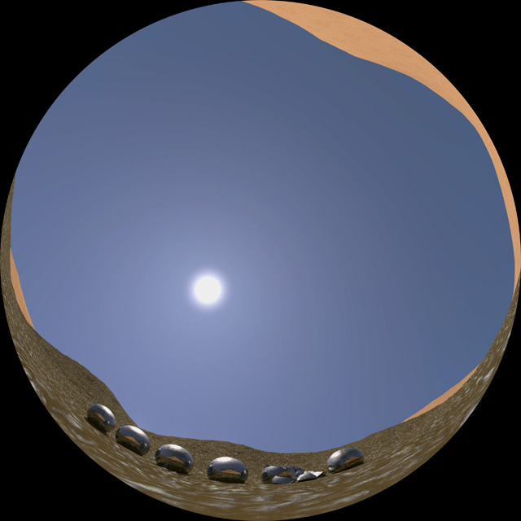
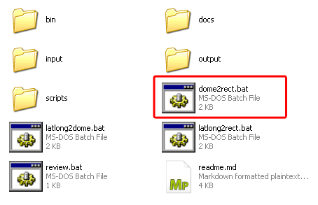

by Andrew Hazelden
Dome2rect is a command line script that uses the open source Panotool library + MPRemap application to automate the process of converting image sequences between multiple panoramic formats. I created this script because I wanted to make it simpler to convert a fulldome movie trailer into a "flat screen" rectilinear format for posting on sites like YouTube.
Note: Windows 7 or higher is required to use the tools.
Dome2rect is distributed under the GPL v3 license.
New in Dome2rect version 1.6 is a latlong2gearvrmono.bat script that converts latlong/equirectangular/spherical imagery into the Gear VR mono horizontal strip cubemap image format. The cubic2gearvrmono.bat script converts 6 cubemap images into a Gear VR mono horizontal strip cubemap image format. Updated the scripts to automatically create the output folder if required. Updated the file naming of the intermediate cubemap frames.
New in Dome2rect version 1.5 is a movie2imagesequence.bat script that makes it easy to extract image sequences from any .mp4 movies placed in the dome2rect input folder. Also added a script alphaextract.bat that extracts a transparent mask from footage and saves it into an RGB image file in the output folder. The encodemovie.bat script will re-encode a mp4/mov/mkv/avi movie file with ffmpeg into a compact mp4 movie to make it playback better on mobile/tablets/desktop systems. The imagesequence2movie.bat script will turn your image sequence into an mp4 movie using ffmpeg.
New in Dome2rect version 1.4 is support for converting LatLong Stereo images into the Gear VR Stereo cubic format, and a LatLong to mental ray cube1 horizontal strip format conversion.
New in Dome2rect version 1.3 is support for LatLong to cubic, horizontal cross, vertical cross, and cubemap3x2 conversions.
The dome2rect program is an open source program that is a free download. A sample fulldome image sequence is included.
You can download the latest version from the dome2rect page:
http://www.andrewhazelden.com/blog/2013/08/dome2rect
For the software to work it has to be expanded and moved to the folder:
C:\dome2rect
The dome2rect conversion process works by reading fulldome formatted imagery from the C:\dome2rect\input folder and saving the converted rectilinear frames to the C:\dome2rect\output folder. Let's convert the included fulldome angular fisheye sample image sequence named (zosma.0000.jpg - zosma.0035.jpg) to a flattened rectilinear format.
Fulldome Sample Image

Step 1. Edit the batch script file dome2rect.bat using a text editor. Type in your current input and output image filenames.
Step 2. Double click on the dome2rect.bat program to start the conversion process.

Step 3. The script will start and begin converting the imagery. A progress screen displays the status as the mpremap utility converts the current frame. (When the program gets to the end of your image sequence you will get a generic warning indicating mpremap couldn't find the next image.)

Step 4. When the conversion process is complete we can review the image sequence that was generated in the "output" folder. If you are running Windows 7 you can use the included review.bat movie viewer.
dome2rect.bat Output Image:

This image was created using a dome to rectilinear conversion.
The rect2dome.bat script can be used to convert a 1080p HD JPEG or PNM image sequence into a fulldome formatted fisheye projection.
The final output image resolution and the image positioning is controlled by editing the rect2dome script in the C:\dome2rect\scripts\ folder.
A sample rectilinear to domemaster image sequence conversion, named rect2dome.0000.jpg to rect2dome.0035.jpg, is included in the C:\dome2rect\output folder.
rect2dome.bat Input Image:
This is the input image for the rectilinear to dome conversion.
rect2dome.bat Output Image:

This image was re-projected into a domemaster fisheye format.
When the rect2dome output image is viewed in a fulldome simulator it looks like this:
Note: The Domemaster Stereo shader tool "Dome Viewer" was used to preview the rect to dome conversion.
Right now the only image format enabled for input/output is .jpg files and a UNIX .pnm image format.
I created the following example .bat scripts to show what is possible:
alphaextract.bat
This script extracts a transparent mask from footage and saves it into an RGB image file in the output folder.
angular2cyl.bat
Converts a an angular fisheye image to a cylindrical image.
angular2latlong.bat
Converts an angular fisheye image to a latlong/equirectangular/spherical image.
cubic2gearvrmono.bat
Converts 6 cubemap images into a Gear VR mono horizontal strip cubemap.
dome2rect.bat
Converts a 180 degree domemaster format angular fisheye image to a rectilinear image format.
encodemovie.bat
Re-encode a mp4/mov/mkv/avi movie file with ffmpeg into a compact mp4 movie to make it playback better on mobile/tablets/desktop systems.
imagesequence2movie.bat
This script will take an image sequence along with an audio file and create an mp4 movie file using ffmpeg.
latlong2cubemap3x2.bat
Converts a latlong/equirectangular/spherical image to a cubic format that has a single image output with a Cubemap 3x2 arrangement with 3 cubic faces on the top row, and 3 cubic faces on the bottom row.
The Cubemap 3x2 format was popularized by Garden Gnome Software's Pano2VR Panoramic tools.
latlong2cubic.bat
Converts a latlong/equirectangular/spherical image to a set of 6 cubic face images.
latlong2cyl.bat
Converts a latlong/equirectangular/spherical image to a cylindrical image.
latlong2dome.bat
Converts a latlong/equirectangular/spherical image to a fulldome image.
latlong2gearvrmono.bat
Converts latlong/equirectangular/spherical image into a Gear VR mono horizontal strip cubemap image format.
latlong2horizontalcross.bat
Converts a latlong/equirectangular/spherical image to a cubic format that has a single image output with a horizontal cross arrangement.
latlong2mentalrayhorizontalstripcube1.bat
Converts a latlong/equirectangular/spherical image into a cubic format that has a single image output with a mental ray cube1 horizontal strip arrangement.
latlong2rect.bat
Converts a latlong/equirectangular/spherical image to a rectilinear image.
latlong2verticalcross.bat
Converts a latlong/equirectangular/spherical image to a cubic format that has a single image output with a vertical cross arrangement.
latlongstereo2gearvrstereo.bat
Converts a pair of latlong/equirectangular/spherical stereo images into a cubic format that has a single image output with a Samsung GearVR Stereo horizontal strip arrangement.
The left LatLong frames in the image sequence should be named <name>_L.#.jpg, and the right LatLong frames in the image sequence should be named <name>_R.#.jpg.
movie2imagesequence.bat
Extract image sequence frames from all of the .mp4 movie files in the input folder using ffmpeg.
rect2dome.bat
Converts a rectilinear image to a fisheye image
review.bat
Simple playback program to view the image output. This tool uses ffmpeg's playback tool.
Internally the image projections are done using the mpremap library by Helmut Dersch: http://webuser.fh-furtwangen.de/~dersch/mp/MotionPanoramas.html
The conversion scripts are stored in the scripts/ folder and are written using the Panotools PT Stitcher syntax: http://wiki.panotools.org/PTStitcher
This example panotools conversion script takes an equidistanst fisheye image and converts it to a 1920x1080p rectilinear image output. The image is rolled -10 degrees, and pitched 55 degrees.
# Defish fulldome image to a 1080p HD format:
p f0 w1920 h1080 v90
o f3 v180 r-10 y0 p55
m i2
This example panotools conversion script takes an angular fisheye image and converts it to a 2160x1080 cylindrical image output. The image is pitched 90 degrees.
# Defish image to a cylindrical 1080p format:
p f1 w2160 h1080 v360
o f3 v360 r0 y0 p90 b0
m i2
This example panotools conversion script takes an angular fisheye image and converts it to a 2048x1024 latitude longitude (equirectangular) image output. The image is pitched 90 degrees.
# Defish image to a latlong 1024p format:
p f2 w2048 h1024 v360
o f3 v360 r0 y0 p90 b0
m i2
This example panotools conversion script takes a latitude longitude (equirectangular) image and converts it to a 1920x1080p rectilinear image output.
# latlong image to a 1080p HD format:
p f0 w1920 h1080 v90
o f4 v360 r0 y0 p0
m i2
This example panotools conversion script takes a latitude longitude (equirectangular) image and converts it to a 1080x1080 fulldome angular fisheye image output. The image is pitched -90 degrees.
# latlong to fulldome fisheye 1080x1080 format:
p f3 w1080 h1080 v180
o f4 v360 r0 y0 p-90
m i2
Here is a quick summary of the PT Stitcher syntax:
'p' = Destination Image Attributes
'p' Attributes:
C0,960,420,960 = Crop Dimensions left,right,top,bottom
f0 = projection mode 0 = rectilinear
f1 = projection mode 1 = cylindrical
f2 = projection mode 2 = equirectagular/latlong
f3 = projection mode 3 = fullframe fisheye
w1920 = destination width 1920 px
h1080 = destination height 1080 px
v90 = horizontal field of view = 90 degrees
'o' = Source Image Attributes
'o' Attributes:
f0 = projection mode 0 = rectilinear
f3 = projection mode 3 = equidistant fisheye
f4 = projection mode 4 = equirectagular/latlong
f5 = projection mode 5 = circular fisheye
f10 = projection mode 10 = equisolid fisheye
r-10 = roll the image -10 degrees (left)
y22 = yaw the image 22 degrees
p45 = pitch the image 45 degrees
b0.1 or b0.5 = barrel distort correct
= useful ranges from -1.0 to 1.0
m = Image Anti-Aliasing
'm' Attributes:
m i2 = smooth spline36 interpolation of the converted imagery
To change the name of the input and output files you can edit the .bat scripts using a plain text editor. All image sequences start on frame number 0 (eg. 0.jpg)
To convert a single frame image enter the exact image name. (eg. image.jpg)
To convert an unpadded image sequence use the value %%d.jpg (eg. 9.jpg )
To convert an a 4 digit padded image sequence use the value %%.4d.jpg (eg: 0009.jpg)
If you want the dome2rect script to process a single frame for testing change the following code:
@set ptscript=dome2rect
@set input=input\zosma.0001.jpg
@set output=output\sequence.%%d.jpg
If you want the dome2rect script to process a 4 digit padded image sequence change the following code:
@set ptscript=dome2rect
@set input=input\zosma.%%.4d.jpg
@set output=output\sequence.%%d.jpg
I was inspired to make this after reading Jason Fletcher's blog post on converting fulldome movies for display on flat screens: http://thefulldomeblog.com/2013/06/29/defishing-for-flat-screens/
Cheers,
Andrew Hazelden
eMail: andrew@andrewhazelden.com
Blog: http://www.andrewhazelden.com
Twitter: @andrewhazelden
Google+: https://plus.google.com/+AndrewHazelden/